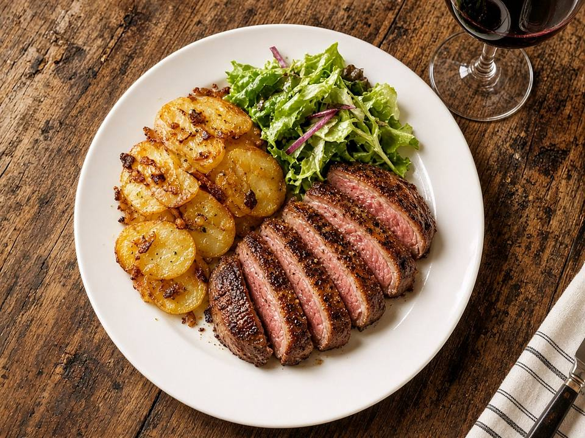
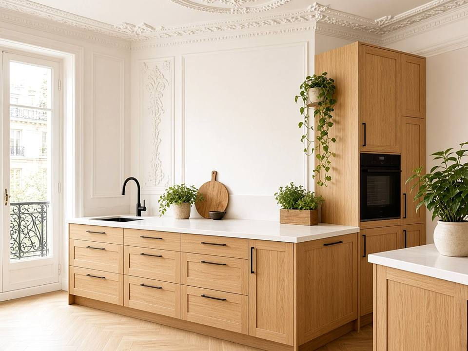
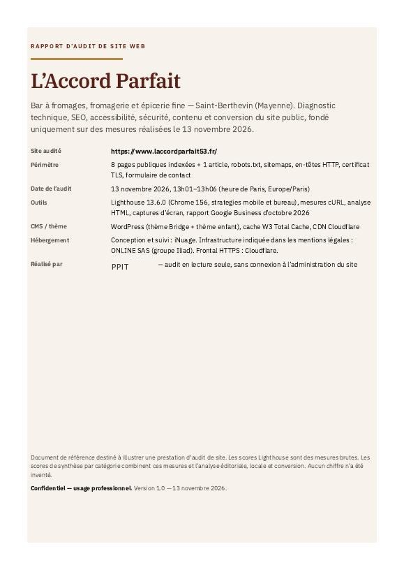

Sites web, applications et automatisations
qui font gagner du temps.
Je suis Peter Philippot, développeur web indépendant. Je conçois des sites WordPress, des applications Laravel / React et des automatisations, avec des prix fixes annoncés à l’avance et un suivi par écrit.
Ce que je fais
Des projets livrés étape par étape, testables avant validation.
Sites vitrines WordPress
Site clair, rapide et facile à modifier vous-même : pages, formulaire, SEO de base, mentions légales.
Applications web
Laravel, React / Next.js : espaces clients, back-offices, caisses, réservations, tableaux de bord.
E-commerce
WooCommerce ou Shopify : catalogue, paiement en ligne, livraison, emails de commande.
Automatisation & IA
Relier vos outils (formulaires, tableurs, emails, CRM) et automatiser les tâches répétitives.
Audit, SEO & performance
Rapport chiffré : vitesse, référencement, sécurité, conversion, avec un plan d’actions priorisé.
Montage vidéo
Montage de vidéos courtes (TikTok / Shorts), motion design simple, visuels pour réseaux sociaux. Voir un exemple →
Démos fonctionnelles par domaine
Ce ne sont pas des maquettes : chaque démo fonctionne vraiment dans votre navigateur (formulaires, panier, calculs, graphiques). Ce sont des projets d’exemple, avec des données fictives.

Projet d’exempleRestaurant
Carte filtrable et réservation en ligne avec confirmation.
Tester la démo →
Projet d’exempleArtisan
Calculateur de devis en direct et galerie de réalisations.
Tester la démo →Projet d’exempleE-commerce
Catalogue, panier persistant, code promo et tunnel de commande.
Tester la démo →Projet d’exempleBlog
Articles en Markdown, recherche et filtres par thème.
Tester la démo →Projet d’exempleApplication web
Caisse + stock : CRUD, tickets, tableau de bord et graphiques.
Tester la démo →Montage vidéo court — Top 5 TikTok / Shorts
Montage rythmé, calé sur la musique : transitions (glitch, whip pan, zoom punch), ralentis avec arrêt sur image, rangs animés, légendes façon TikTok et sound design. Réalisé à partir de 5 rushs de téléphone fournis par le client, au format vertical 9:16.
Musique : « Funky Chunk » – Kevin MacLeod (incompetech.com), licence CC BY 4.0.
Une réalisation concrète : l’audit de L’Accord Parfait
J’ai audité le site de L’Accord Parfait, bar à fromages à Saint-Berthevin : performance, SEO, sécurité, accessibilité et conversion, mesurés avec Lighthouse et une analyse page par page.
Résultat : un score de synthèse de 51/100, une page d’accueil de 11,4 Mo sur mobile et un plan d’actions en 5 priorités.

Ma façon de travailler
1. Devis clair
Prix fixe, périmètre écrit, délai annoncé. Pas de surprise.
2. Livraison par étapes
Vous testez sur une version de démonstration avant de valider.
3. Paiement à la validation
Chaque étape est réglée quand elle est livrée et validée.
4. Tout à distance
Échanges écrits, suivi régulier, où que vous soyez.
Un projet en tête ?
Décrivez votre besoin sur Codeur : je réponds rapidement avec une proposition claire, un prix fixe et un délai.
Me contacter via Codeur